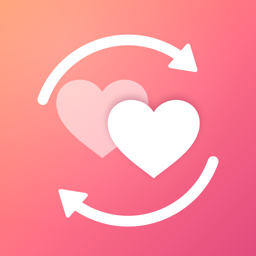

SnuggleShuffleSupport
Contact us
Email snuggleshuffle@jlwproject.co.uk. We usually reply within a few days.
It helps to include your iPhone model, iOS version, and the app version (shown on the app's App Store page under Version History).
Common questions
What's free, and what does Plus add?
The free version includes one category with as many ideas as you like, the spinning wheel, photo backgrounds and export and import. SnuggleShuffle Plus is a one-time purchase that unlocks more categories and extra wheel themes.
I bought Plus but it isn't unlocked
Open Settings in the app (the gear icon) and tap Restore Purchases. Make sure you're signed in to the App Store with the same Apple ID you bought it with. Plus can be shared with your family through Family Sharing.
How do I move my wheels to another iPhone?
On the old iPhone: Settings › Export wheels…, then save or send the file. On the new iPhone, open that file, or use Settings › Import wheels…. Without Plus, ideas merge into the category you already have, and extra categories are skipped.
Will I lose my ideas if I delete the app?
Yes. Your ideas are stored only on your iPhone. Export your wheels first if you want to keep a copy.
Can I spin by hand?
Yes. Flick the wheel with your finger in either direction, tap Spin, or shake your phone. The pick is always random, weighted towards favourites and away from things you've done recently.
How do I get a refund?
Purchases are handled by Apple. Request a refund at reportaproblem.apple.com.
Requirements
iPhone with iOS 18 or later.